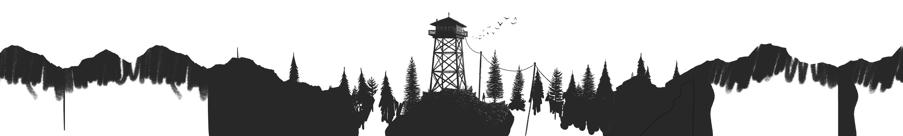

{% extends "base.html" %}

{{ super() }}

{% block styles %}
{{ super() }}
<style>
  * {
    box-sizing: border-box;
  }

  .md-tabs {
    top: 2.4rem;
    position: absolute;
    background: transparent;
  }

  .placeholder {
    height: var(--placeholder__height);
	background: var(--placeholder__background);
  }

  .z-index {
	z-index: var(--z-index);
  }
</style>
{% endblock %}

{% block header %}
  {% include "partials/header.html" %}
{% endblock %}

{% block tabs %}
{% endblock %}

{% block container %}
<div class="parallax">
  <div class="parallax__placeholder" style="--parallax__multiplier: .12;">
    <div class="parallax__layer" style="--parallax__layer-depth: 20;background: var(--md-primary-fg-color)">
	</div>
    <div class="parallax__layer colored" style="--parallax__layer-depth: 11;-webkit-mask-image: url('assets/parallax/firewatch/depth_6.png');--colored: var(--md-default-bg-color);-webkit-mask-position: bottom;">
      
    </div>
    <div class="parallax__layer colored" style="--parallax__layer-depth: 7;-webkit-mask-image: url('assets/parallax/firewatch/depth_5.png');--colored: var(--md-default-bg-color);-webkit-mask-position: bottom;">
      
    </div>
    <div class="parallax__layer colored" style="--parallax__layer-depth: 5;-webkit-mask-image: url('assets/parallax/firewatch/depth_4.png');--colored: var(--md-default-bg-color);-webkit-mask-position: bottom;">
      
    </div>
    <div class="parallax__layer colored" style="--parallax__layer-depth: 3;-webkit-mask-image: url('assets/parallax/firewatch/depth_3.png');--colored: var(--md-default-bg-color);-webkit-mask-position: bottom;">
      
    </div>
    <div class="parallax__layer colored" style="--parallax__layer-depth: 2;-webkit-mask-image: url('assets/parallax/firewatch/depth_2.png');--colored: var(--md-default-bg-color);-webkit-mask-position: bottom;">
      
    </div>
    <div class="parallax__layer colored" style="--parallax__layer-depth: 1;-webkit-mask-image: url('assets/parallax/firewatch/depth_1.png');--colored: var(--md-default-bg-color);-webkit-mask-position: bottom;">
      
    </div>
    <div class="parallax__layer colored" style="--parallax__layer-depth: 0;-webkit-mask-image: url('assets/parallax/firewatch/depth_0.png');--colored: var(--md-default-bg-color);-webkit-mask-position: bottom;">
      
    </div>
    <div class="parallax__scrollwrap">
		{% include "partials/tabs.html" %}
	</div>
  </div>
  <div class="parallax__group">
    <div class="placeholder" style="--placeholder__height: 100vh; --placeholder__background: var(--md-default-bg-color);"></div>
  </div>
  <div class="parallax__group">
    <div class="placeholder" style="--placeholder__height: 200vh; --placeholder__background: orange;"></div>
  </div>
  <div class="parallax__group">
    <div class="placeholder" style="--placeholder__height: 300vh; --placeholder__background: red;"></div>
  </div>
  <div class="paralax__group">
	{% include "partials/footer.html" %}
  </div>
</div>
{% endblock %}

{% block footer %}{% endblock %}
